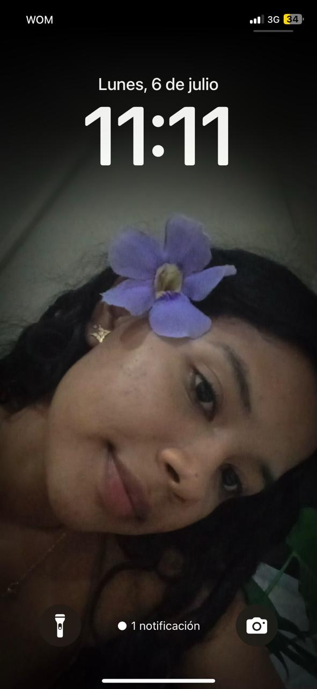

Nunca necesité grandes razones para pensar en ti.
Bastaba con que aparecieras en mi mente...
y todo el día cambiaba un poquito.
Amar también es esto...
encontrar a alguien en los detalles
más pequeños de la vida.

Cada vez que veía una hora especial... me acordaba de ti.
Quizá nunca lo notaste.
Muchas veces estaba trabajando.
Concentrado, apurado,
en el pc.
Pero esos numeros en el reloj...
o
Mi distracción favorita...
que no pasaba desapersivida,
cada vez que llegaba un mensaje
.. .. .. .. .. .. .. .. .. .. .. .. .. .. .. .. .. .. .. .. .. .. .. .. .. .. .. .. .. .. .. .. .. .. .. .. .. .. .. .. .. .. .. .. .. .. .. ..
.. .. .. .. .. .. .. .. .. .. .. .. .. .. .. .. .. .. .. .. .. .. .. .. .. .. .. .. .. .. .. .. .. .. .. .. .. .. .. .. .. .. .. .. .. .. .. ..